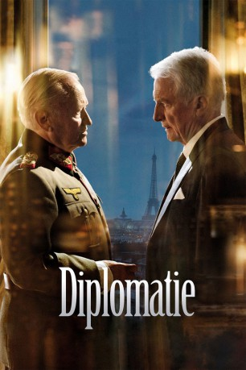

#7483 Diplomatie
 
 IMDB-Wertung: 7.1 / 10
IMDB-Wertung: 7.1 / 10  Metascore: 0
Metascore: 0 
Es ist die Nacht vom 24. auf den 25. August 1944. Die Alliierten stehen vor den Toren von Paris. Adolf Hitler hat den Befehl erteilt, die französische Hauptstadt dürfe "nicht oder nur als Trümmerfeld in die Hand des Feindes fallen". Kurz vor Tagesanbruch bereitet sich Dietrich von Choltitz Kommandierender General von Groß-Paris, in seinem Hauptquartier im Hotel Meurice darauf vor, Hitlers Befehl auszuführen und die Stadt dem Erdboden gleichzumachen. Alles ist vorbereitet: Die Brücken über der Seine, die Kathedrale Notre-Dame, der Louvre, Sacré-Coeur, Place de la Concorde und der Eiffelturm sind bereits vermint - doch in letzter Minute verhindert von Choltitz die Sprengung, Paris wird nicht zerstört. Was bewegt den als gnadenlos befehlstreu geltenden General die Anordnung des "Führers" nicht auszuführen? Sind es moralische Bedenken oder der Druck der alliierten Mächte?
Jahr: 2014
Dauer: 83 Minuten
FSK: 12
Land: Frankreich Studio: Koch MediaTonspuren:
Untertitel:
Auflösung: 1080p (1920x800) Größe: 3072 MB
Genre: Drama, Krieg
Regisseur: Volker Schlöndorff
Drehbuch: Cyril Gely
Soundtrack:
Darsteller:
 André Dussollier als Raoul Nordling
André Dussollier als Raoul Nordling Niels Arestrup als Général von Choltitz
Niels Arestrup als Général von Choltitz Burghart Klaußner als Hauptmann Werner Ebernach
Burghart Klaußner als Hauptmann Werner Ebernach Robert Stadlober als Lieutenant Bressensdorf
Robert Stadlober als Lieutenant Bressensdorf Lucas Prisor als Soldat SS #1
Lucas Prisor als Soldat SS #1- Marie Dompnier als La dame maquillée
 Jochen Hägele als Soldat d'escorte
Jochen Hägele als Soldat d'escorte Paula Beer als Ingrid , uncredited
Paula Beer als Ingrid , uncredited- Tristan Robin als Dankwart Von Arnim , uncredited
- Charlie Nelson als Le concierge
- Jean-Marc Roulot als Jacques Lanvin
- Stefan Wilkening als Caporal Mayer
- Thomas Arnold als Lieutenant Hegger
- Attila Borlan als Officier SS #2
- Claudine Acs als La femme de chambre
- Dominique Engelhardt als Garde Hans
- Johannes Klaußner als Jeune soldat 18 ans
- Charles Morillon als Garde du vestibule
- Olivier Ythier als Lieutenant Karcher
- Pierre-Marie Rochefort-Schneider als Opérateur radio
- Jean-Cyril Durieux als Soldat d'escorte
- Eric Moreau als Un résistant , uncredited
Datei: X:\2014(A-F)\Diplomatie (2014, FSK12, 1920x800).mkv seit 15.11.2017
Festplatte: HD 2013(I-Z)-2014(A-Z)
 Es gibt insgesamt 119 Filme in der Gruppe '2014(A-F)'
Es gibt insgesamt 119 Filme in der Gruppe '2014(A-F)'